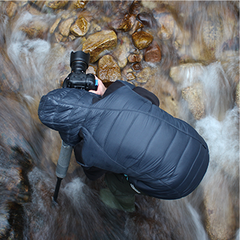

About
Snappers代表、山田太郎のプロフィールや経歴の紹介ページです
Procile
NAPPERS 代表 : 山田太郎
アナログ、デジタを問わず、トイカメラやポロライド、ビデオカメラに至るまで、あらゆるカメラに夢中になって遊んでいるうちに
自然とカメラマンとしての道をこころざすようになる。
大学卒業後、有名カメラマンのアシスタントを経て渡米。世界各国を放浪しながら撮影をする中で、源氏あのアウトドアカメラ
としてのスタイルを確立する。2016年に帰国し、「SNAPPERS」を設立。
現在は雑誌の表紙やカタログの撮影を中心に、映像作品などにもかめらまんとして参加するなど幅広く活躍している。

Career and Job history
| 1994年3月 | 丸三角芸術大学写真家 卒業 フクベ写真研究室に入社、福部秀明氏に師事 |
|---|---|
| 2012年3月 | 福部写真研究所を退職し渡米、世界各国を放浪しながら撮影を続ける |
| 2012年8月 | イタリア・ミラノで開催されたコンクールにて、審査委員特別賞受賞 |
| 2016年1月 | 帰国し「SNAPPERS」を設立 |